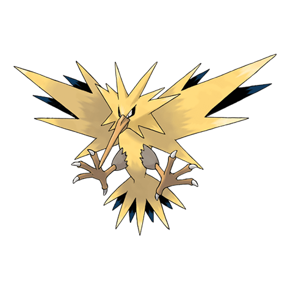

Назад
Запдос

Запдос — легендарный Покемон 1 поколения под номером 145 в Покедекс. Обитает он в регионе Канто и относится к Электрическому и Летающему типу. Запдос не эволюционирует. Запдос — легендарный Покемон, способный контролировать электричество. Обычно он обитает в грозовых облаках. Попадающие в тело Покемона молнии наделяют его невероятной силой.
Тип:
Электрический
Летающий
Эволюция
# 145 Запдос